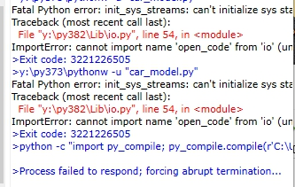

Article impression <<
Previous Next >> SSH setting
Week10-14
gm用戶登錄設置
1.登錄到自己的學校gmail，到https://console.developers.google.com
2.選台灣並勾選同意，點選建立專案，名子沒有規定
3.到老師的cd2020pj1 ，直接git clone 整個倉儲放在tmp
4.啟用API和服務，選Google + Domain API 在按啟用
5.點選憑證 > 設定同意畫面，選擇內部，應用程序名稱自己取
6.在"API和服務"下，進入"憑據"建立“OAuth 客戶端ID"類型
7.選擇網路應用程式，按建立並把帳密儲存到tmp下
授權的JavaScript來源：https://localhost:8443
授權的重定向URI：https://localhost:8443/login/google/
8.開啟leo，將cd2020pj1.leo打開，編輯路徑和名稱
9. 儲存後按一下darwROC，再輸入pip install authomatic
10.進入倉儲cd2020pj1，輸入python wsgi.py就完成了
影片連結:https://youtu.be/fdH7k_-vIpk
Assignment 3 直播討論
MSModelingAndTFApproaches:
40723232 前20
40723234 21-50
40723204 51-80
40723225 81-110
40623115 111-140
40623251 141-170
40723245 171-207
MSModelingAndTFApproaches:
40723238
40723210
MechaEducFutureNeed:
40723250
40723210
MechaFutureAndChallenges:
40723212
Mechatronic project
40723210
直播影片:https://youtu.be/GmKxlNPx-gs
Vrep虛擬主機設置
1.下載VirtualBox，下載老師用好的Ubuntu
2.點選檔案的 > 匯入應用裝置，把Ubuntu匯入
3.設定網路Host-Only，再啟動Ubuntu主機
4.輸入密碼kmol2020，點選Activities > 開啟LXTermial
5.輸入xterm& ，使用ctrl+滑鼠右鍵來放大視窗
6.用ls來顯示資料，再用cd來進入該資料夾內
7.輸入./coppeliaSim.sh 來開啟vrep就可準備連線了
影片連結:https://youtu.be/3lDOCkIkJ00
Remote API 連線
1.先下載老師的控制程式，和Xming 軟體
2.Xmig 解開後，放在data下就可以了
3.新增設定3個虛擬主機的NAT網路埠號
4.開啟putty新增一個localhost ，port 22
5.設定SSH下的X11，儲存之後按Open
6.開啟XLaunch.exe，都按下一步即可
7.putty開啟視窗的帳密都是kmol2020
8.使用mv cop* coppeliasim 來更改名子
9.開啟car_model.py，Tools > Go 即可
影片連結:https://youtu.be/6vVJh1cni3c
python 3.8.2 版本問題如圖

解決方法:

Article impression <<
Previous Next >> SSH setting